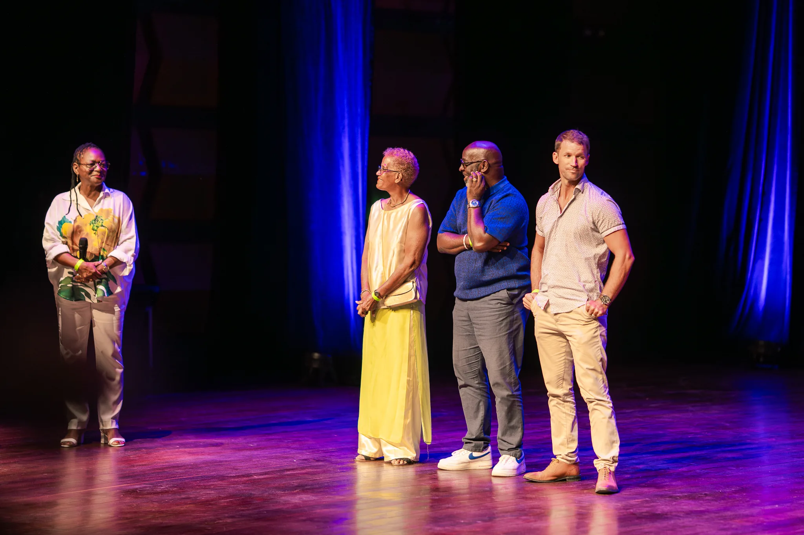
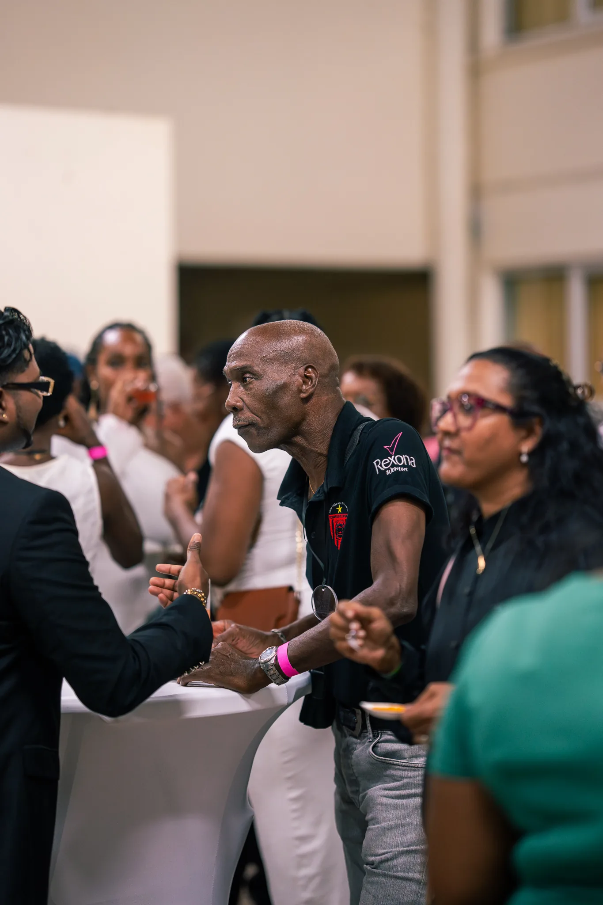
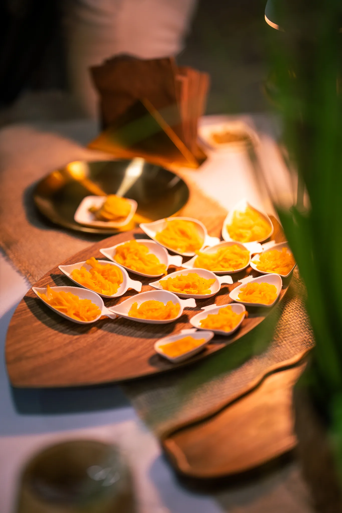
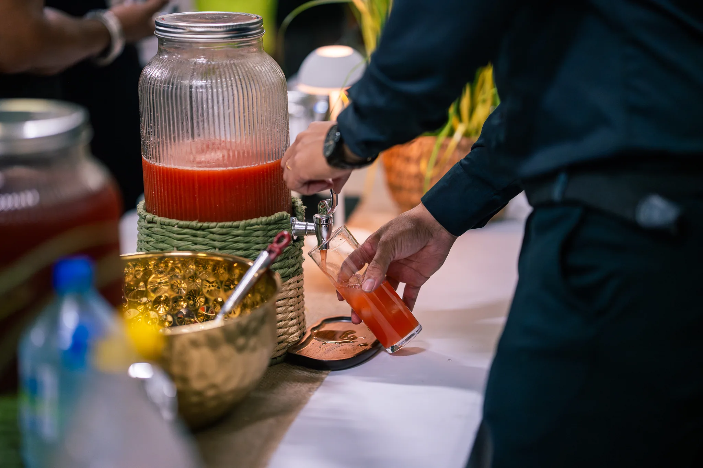
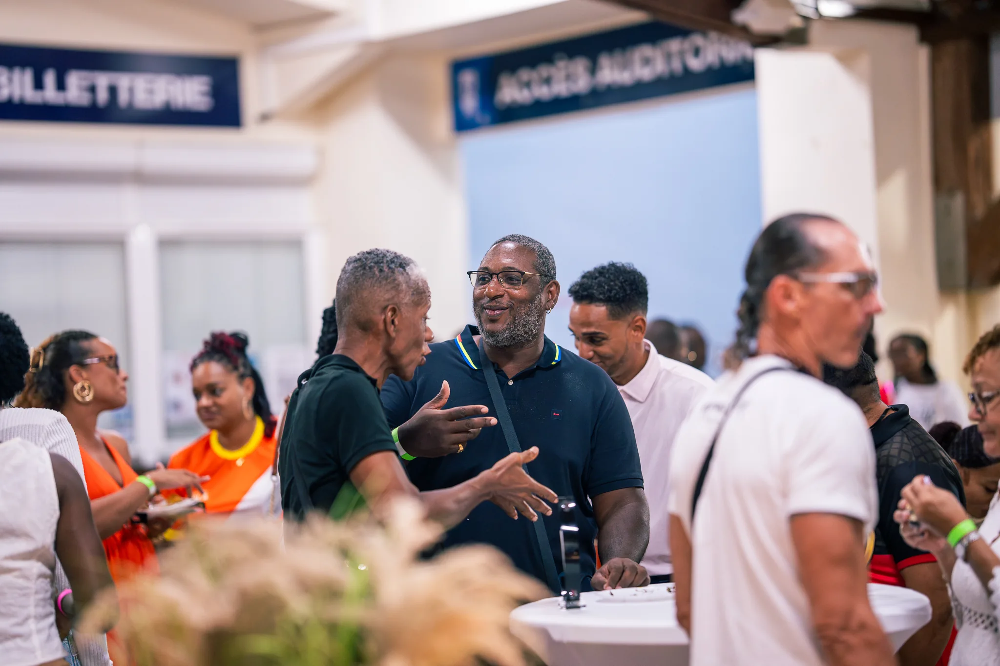
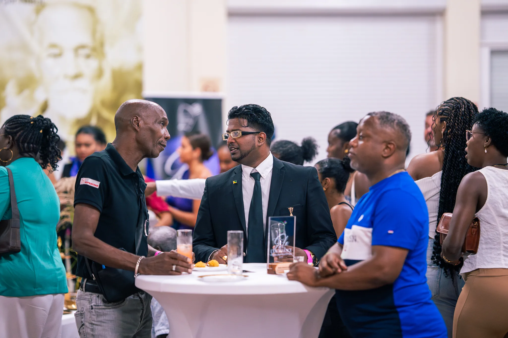
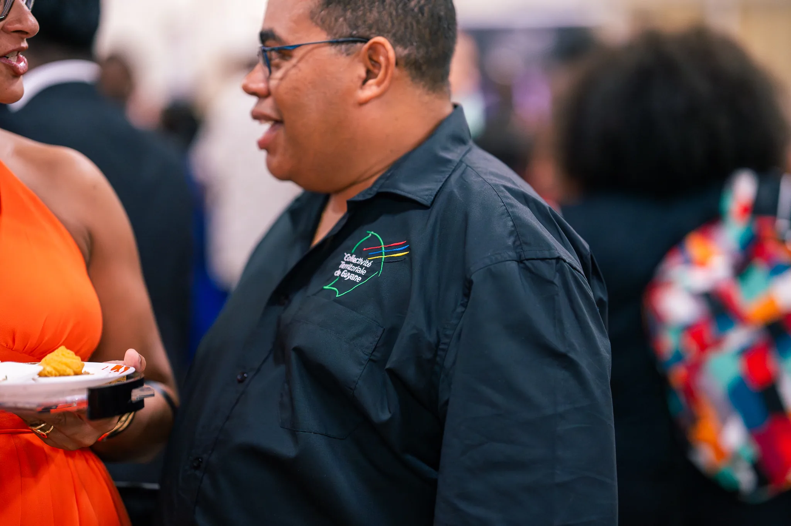
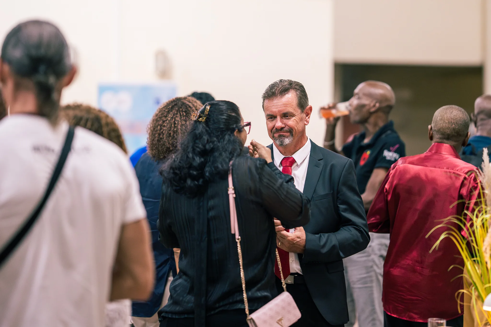
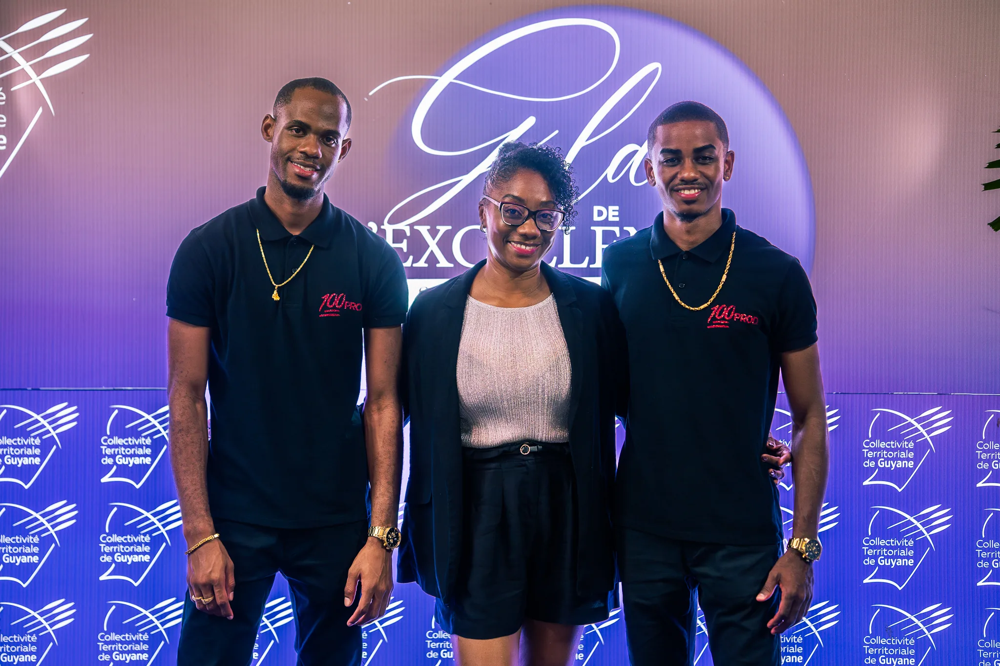
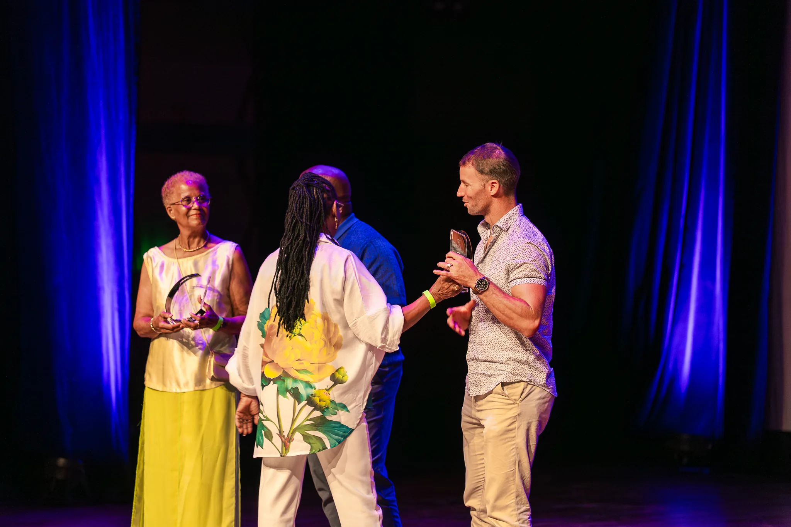

Naïma Laurent
Accompagne depuis dix ans les jeunes athletes sur les cycles d'initiation et de competition.
Soutenir ce parcoursCandidats en lumiere
Ces cartes servent de base de travail. Vous pourrez remplacer plus tard les noms, structures, descriptions et photos par les profils reels du gala.

Accompagne depuis dix ans les jeunes athletes sur les cycles d'initiation et de competition.
Soutenir ce parcours
Pilote la vie associative, coordonne les benevoles et structure les actions menees sur le territoire.
Soutenir ce parcours
Assure avec rigueur l'encadrement des competitions et la transmission des regles aux plus jeunes.
Soutenir ce parcours
Reconnu pour son accompagnement constant et son sens du collectif dans les temps forts sportifs.
Soutenir ce parcours
Investi dans la cohesion des equipes et dans la mise en place d'actions structurantes pour les clubs.
Soutenir ce parcours
Met son exigence au service du jeu, de l'equite sportive et du bon deroulement des rencontres.
Soutenir ce parcours
Present sur tous les temps federateurs, il accompagne les sportifs avec regularite et bienveillance.
Soutenir ce parcours
Incarnant une nouvelle generation de responsables associatifs, il structure l'action locale avec energie.
Soutenir ce parcours
Valorise l'engagement local par une presence constante sur les competitions et les actions de terrain.
Soutenir ce parcours
Se distingue par son energie, sa disponibilite et sa capacite a rassembler autour du projet associatif.
Soutenir ce parcours